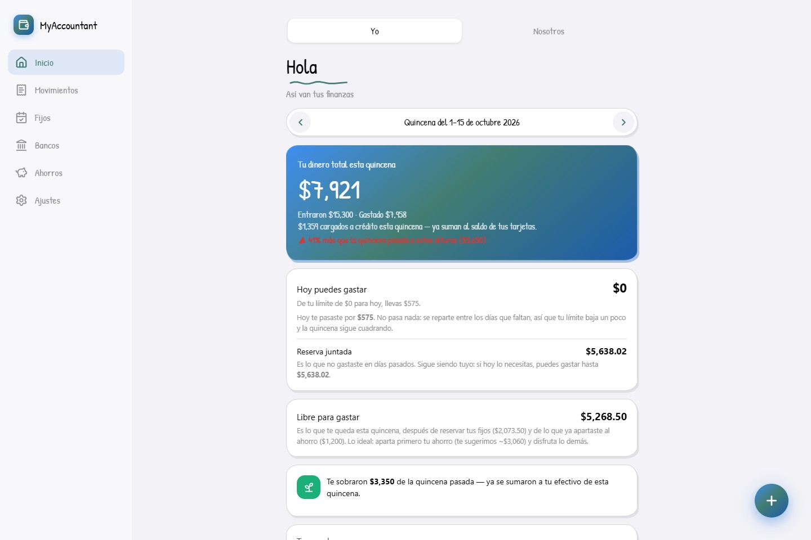

Cuentas y movimientos
Navega por las vistas originales y prueba cambios locales.
Explora el presupuesto, las cuentas, los movimientos y la mascota de la aplicación original. Todos los importes y las cuentas pertenecen al conjunto de prueba del proyecto.
Demo del frontend · datos ficticios · sin servicios empresariales conectados.

Resumen de quincena, gastos y ahorro con cifras de ejemplo.
Navega por las vistas originales y prueba cambios locales.
Conserva las ilustraciones y la experiencia de cuidado originales.
Demo del frontend · datos ficticios · sin servicios empresariales conectados.